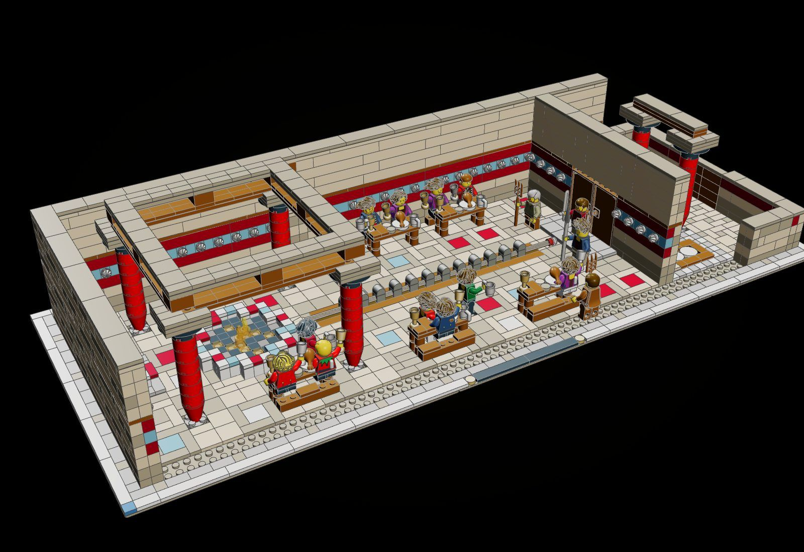
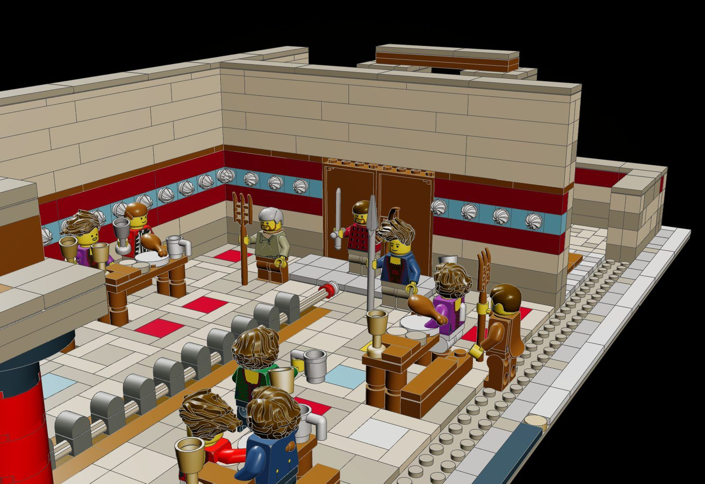
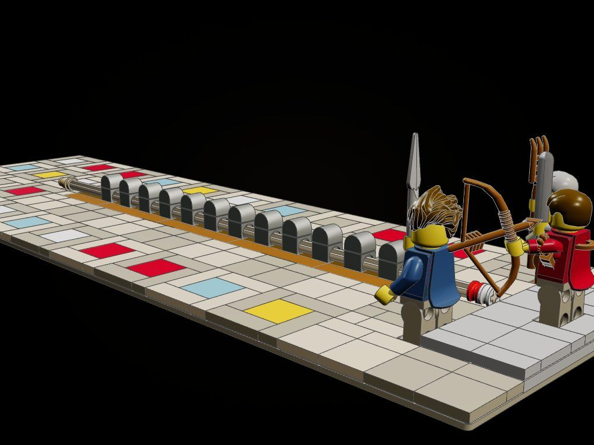
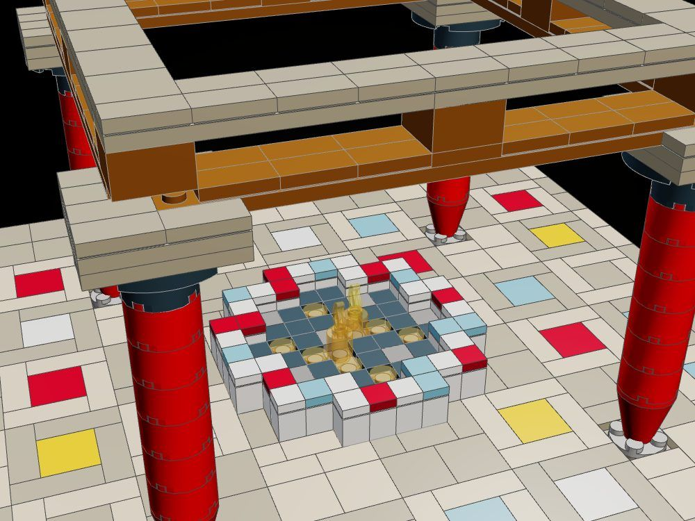
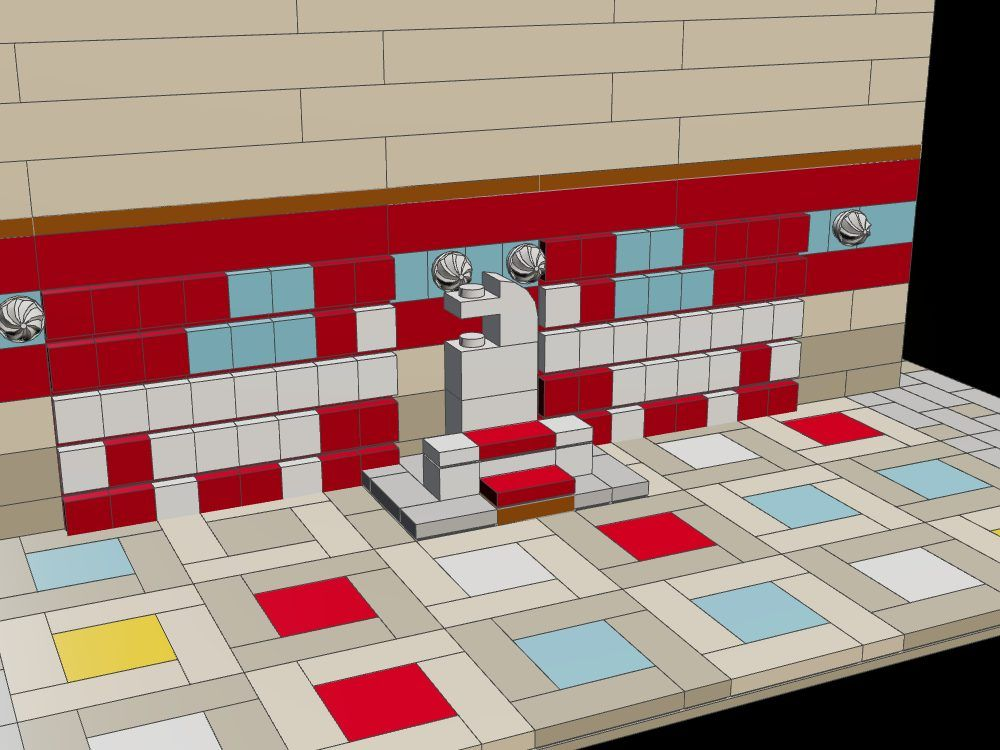
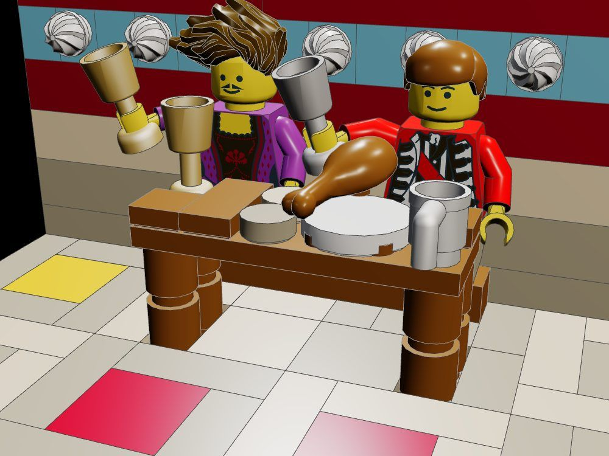

The Bow and the Hall
The turn: the beggar has strung the bow and stands on the stone sill inside the shut great doors; his arrow has gone through all twelve axe-heads down the spine of the hall and out past the last, and the suitors at their tables have not yet understood.
"...and let the arrow fly, and missed not the end of the handle of any of the axes, but clean through and out at the last passed the arrow weighted with bronze." (Odyssey XXI.421-423, tr. A. T. Murray)

The object
The bow and the twelve axes: a Technic axle 32L, the arrow, really runs through the pin holes of twelve Technic bricks 1 x 1 set on one axis in a trench of stamped earth down the floor; it slides back and forth through all twelve, its bronze point (a cone on the axle end) out past the last, its fletching behind the first.






How it is built
- The hall follows the halfworld megaron plan: the great doors and the stone sill at one end, the postern to the storeroom in the side wall near them, the axe line down the spine, the round hearth between four columns, the stair to Penelope's door, the throne at the far end facing the doors.
- The play: the arrow (a Technic axle 32L) threads the pin holes of twelve Technic bricks 1 x 1 in the trench and slides through all twelve; the two great doors (Door 1 x 4 x 6 in frames) swing on their hinges.
- The front wall, with the postern in it, lifts off the base in one piece: its two rows of brick are tied by two-wide plate courses (a timber band and the course under the coping).
- The walls are plastered inside with a dado, then a band of red, blue and red: white swirled plates on the studs of bricks with a stud on one side make a running spiral, and behind the throne two griffins are laid in tiles.
- The floor is painted in squares: a pinwheel of four 1 x 3 tiles round a 2 x 2 tile of red, blue, white or ochre.
- The columns narrow to their feet (an inverted cone plugged into a round stone foot), red with black capitals, and carry the clerestory: beams, short posts with the light between them, a roof round the smoke hole.
- Beyond the doors, the porch with its two columns and the beggar's bed of hide and fleeces; beyond it the court, its gate shut, the altar of Zeus of the court.
The builds inside the build
The bow and the axe line
the bow and the axe line: the sill, the trench, the twelve heads, the arrow through them; the archer, his son, the swineherd
The hearth, the columns and the clerestory
the hearth with its four columns and the clerestory over it
The throne and the griffins
the throne on its dais before the end wall, the griffins painted either side of it
A suitors' table
a suitors' table against the back wall: the bench, the feast, two suitors at their wine
What the checker says
| Build | File | Pieces | Loose | Clashes |
|---|---|---|---|---|
| The Bow and the Hall | set.bow-and-hall | 2,871 | 0 | 0 |
| The Bow and the Hall, the front wall lifted away | set.bow-and-hall-open | 2,481 | 0 | 0 |
| The bow and the axe line | set.bow-and-hall-axes | 309 | 0 | 0 |
| The hearth, the columns and the clerestory | set.bow-and-hall-hearth | 613 | 0 | 0 |
| The throne and the griffins | set.bow-and-hall-throne | 498 | 0 | 0 |
| A suitors' table | set.bow-and-hall-table | 226 | 0 | 0 |
In the film


Still to do
- The axe-heads are Technic bricks with a curved top: they read as a row of sockets with an edge above, not as the double-bladed heads of the halfworld prop.
- The arrow is 32 studs long (about 12 m at minifig scale): it stands for the arrow's whole flight down the line.
- The griffins behind the throne, at 8 x 5 tiles, read as a pattern more than as griffins.
- From most angles the clerestory hides part of the throne, and Penelope at the stair head is hard to see from the front; she needs a close-up of her own.
- A plate-height gap is left above the door frames (the checker reads the frames' corner studs as their top); the lintel rests on the wall either side.
- Minifigures, the tiles and plates on side studs, the arrow, the door leaves and the flames are not checked by the tool; they are placed by calculation and looked at in renders.
- The inverted cone's foot stud plugs into the axle hole of a 2 x 2 round plate: to be tried in real bricks.